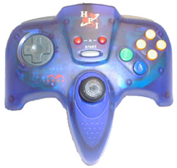
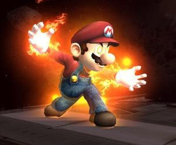

«Es un método útil para suicidarse, mucho mejor que las viejas sogas que no funcionan»
~ Moe Szyslak acerca de esta guía
«Cada vez que la veo me recuerda a mi primera vez videojuego»
~ Videojueguista experimentado acerca de esta guía
«Gracias a esta guía he conseguido romper mi consolador»
~ Videojueguista acerca de esta guía
«¡Ah, que había una guía para esto!»
~ Despistao acerca de esta guía
«Me enseñó a amar»
~ Anónimo acerca de esta guía
«¡Gassen!¡Frrösen!¡Märzdtik achen urzen!¡Uaghhhhhhhhhh!»
~ Niño loco alemán sobre los videojuegos
Buenas, frikis y frikas, hoy aprenderemos a pasarnos un videojuego sin leernos esas guías inútiles escritas en papel (se aconseja que se quemen en caso de ser invierno y hacer frío). Empecemos(NOTA: NO SALTARSE UN SÓLO PASO)
Encender la consola/ordenador
Consoladores Mandos de consola de muchos colorines
Es el primer paso, encender la maquinita. Puede poner diversos nombres al botoncito, on, botoncito, encendedor, to' no rula,reset... Y varias formas de encender: pulsando, desplazando,pateandolo,golpeandolo o buscar en internet o tirando la consola al suelo hasta que se rompa... Confiamos en el poco sentido común del lector para encender su consola (porque si es en el ordenador, ya se supone que lo tienes encendido, furro).
Botones
 Típico mando de consola, con botoncitos y demás chorrada que tendrás que descubrir cómo usar a base de golpes
¿Como adivinar los botones sin leerte el manual de la consola? Si has seguido los pasos recomendados hasta ahora y has quemado el manual ya no hay vuelta atrás (y si no los has seguido te quemamos a ti y al manual). En la consola no tienes por qué tener problema, hay mandos con botoncitos de colorines y letras (si eres daltónico y/o analfabeto te costará un poquito más). Hay mandos de varios tipos, en forma de tridente, en forma de consolador, en forma de ehm... cosa con botones... En caso de que hayas comprado un juego para el pc te decimos que te lo podrías bajar de telepatía.
Personajes

Mario tuvo una época epiléptica

Tú ríete lo que quieras de él, pero te mete la espada por el culo y adiós
Si tu juego tiene la función de elegir personaje, estás de suerte. He aquí el prototipo que deberás seguir para elegir a un personaje equilibrado.
- Tamaño: Sep, el tamaño importa. Es mejor elegir personajes bajitos, con mala leche, que sean capaces de matar a todo bicho viviente de la pantalla. Ejemplo: Marío
- Artilugios: Espadas, lápices, mandos de televisión, consoladores... Todo vale. Si tu personajito tiene utensilios estás de suerte porque te será más fácil pasar las fases. Un ejemplo: Hipervínculo
- Pinta: todos tienen pinta de mindunguis, pero igual alguno que te llena el ojo. ¿Quién sabe? los videojuegos están hechos para pasar un buen rato, y seguro que si miras tías buenas pasas mejor el rato. Ejemplo: Maya Chiranuí
- Habilidades: olvídate de todo lo demás, si puede matar a quinientas personas en un radio de cincuenta metros en doce segundos, estás de suerte. Ejemplo: Jorgito Bush en Mortal Monkloa, con su habilidad atomic bomb.
Escenarios

El típico escenario de juego de acción
¿Son importantes los escenarios? Mucho, sin eso no habría juego furro. ¿Que deberás hacer para pasarte un escenario con todas las de la ley?:
- Pasarlo a la máxima velocidad que te permita el videojuego. Sin pararte en los objetivos ni na, tu corre Forest ¡corre!. Un tío una vez se pasó todo un juego en medio minuto sin usar trucos. Ni qué decir que ahora tiene el cerebro quemado...
- Atravesar paredes. Si te encuentras con una pared, muro, límite de escenario,
puticlub y/o cosa que tranca el paso, no des la vuelta. Pelea contra el videojuego con honor. Empuja la pared, haz placajes, mete el acelerador, dos tiros... ¡Que no te pare una pared! Tarde o temprano se abrirá (la pared o tu cráneo, depende del tiempo...)
- Matar a to Pipo tiene un truco para mandar bombas atómicas en su avión.
- Conseguir el menor número de bonificaciones: monedas, anillos, joyas, ¡to pa na! no sirven para nada y te hacen perder un tiempo muy valioso. Si cojes alguna bonificación, aunque sea por error, te mereces un golpe de remo...
Ataques
Para que un ataque sea útil a la par de atractivo tiene que tener nombres tal que:
- Rayo mortal
- Trueno de la muerte
- Descarga especial
- Explosión final
- Ataque de destrucción + iva
- Golpe superespecial mortífero
- Explosión de materia
- Implosión de antimateria
- Ataque kamikaze
- Superataque especial de la muerte
- Super ataque mortal mas fuerte que el tuyo
- Ataque destructor que duele mucho
- Rayo oscuro
- Impacto total
- Impacto masivo
- Rotura cranio-encefálica (en los juegos de médicos)
- Ataque que ataca
- Ataque supremo
- Golpe mortal
- Rayo maligno de destrucción
- Explosión masiva
 Mario es un especialista en el ataque pirómano...
- Ataque nucelar
- Ataque nucelar-atómico
- Ataque nucelar-atómico-radioactivo
- Ataque wombat
- Ataque uombat
- Ataque explosivo
- Ataque pirómano
- Ataque aquóman
- Ataque superespecial con impacto doble sincronizado en el glóbulo inverso anterior con furia demoníaca adquirida invertida en bonos del estado convexos de un color que no es azul ni verde, sino todo lo contrario con fuerta precomnitiva anterior compuesta del ono furioso.
Da igual si estos ataques son una mierda, si usas ataques asín, tienes la victoria más que asegurada.
Rivales
Ejemplo de enemigo grande, tonto y feo
Enemigos, rivales, competidores... Todos esos bichos que te ponen para que los mates y torturarte la cabeza hasta no matarlos a todos (aunque sea jodío recordamos que es muy importante no saltarse ningún paso, o sea, que por lo dicho aquí antes los tienes que matar a todos si no quieres morir ¡Mwahahahahaha!). Aunque todos son unos tocapelotas, ciertos bichos se dan de matar con más facilidad que otros, a saber:
- Grandes: cuanto más mejor. Si son muy grandotes, te podrás meter por el exófago hasta el intestino y retorcerle las tripas hasta que explote.
- Tontos: ¿quien no recuerda los goombas del Mario que se mueven de un lao para otro sin parar?. Pues ese tipo de bichos son muy matables, les esperas bazooka en mano, y cuando te pasan por cerca cojes la bazooka como un bate de baseball y les atizas fuertes hasta que pierdan el conocimiento. Cuendo estén desmayados, los metes en la sala de espera de un hospital, para que pasen agonizantes sus últimas horas...
- Feos: a los bichitos feos, si los insultas, les puedes crear un complejo si en vez de atacar los insultas. Si tienes suerte, se acabarán suicidando...
- Vanidosos: son fáciles de matar los que dicen: soy más fuerte que tú y no tienes escapatoria, sólo con decirle ¡¡Mira, fans tuyas! y aprovechar para atizarle con tu bazooka/bate, ya lo tienes vencido.
Trucos
Aquí los trucos que hay en los videojuegos (invariablemente del juego que séa, funcionan igual):
| Combinación de elementos para que salga el truco
|
Truco
|
| A+B+L+R+Y+Mover el mando/teclado hacia los lados
|
Activas un portal espacio-temporal que te hace pasar al siguiente nivel o morirte en el intento
|
| Z+A+Varios golpes en el mando/teclado
|
Para que venga tu padrino y mate a todos tus enemigos
|
| L+Z+Aserejé
|
Explotar la consola/ordenador
|
| R+A+Cantar la campanera de Joselito
|
Aparece un cartel en la pantalla que pone "Prohibido cantar"
|
| L+R+A+L+R+A+B+Z+C+A+L
|
Le regalas una revista porno a tu enemigo y haces que se despiste para matarle
|
| C+A+B+R+A
|
Aparece la blanquita y te mata a todos los enemigos de la pantalla con su ataque "cornada cojonera".
|
| C+B+A+Rascarte la cabeza+Dar vueltas sobre ti mismo con el mando en la mano+Espachurrar una mosca contra la pantalla
|
Aparece Quentin Tarantino y al verlo todos tus enemigos mueren desangrados.
|
| A+B+Repetir 50 veces "Plán dental, Lisa necesita frenos"
|
Te meten un lápiz por los calzoncillos y te mueres.
|
| A+L+Gritar fuerte+Aporrear el mando/teclado contra el suelo
|
Aparece el niño loco Alemán y mata a todos los personajes de la pantalla. Pero ten cuidado, en un impulso homicida puede ser que mate también a tu personaje, o que salga de la pantalla y te mate a ti...
|
| Z+L+A+Doble salto mortal
|
Vienen unos cazatalentos y cogen a tu personaje para un especial de acrobacias en un circo. Si te sale bien, después puedes usar al león para matar enemigos.
|
| A+B+C
|
LLega pipo para enseñarte el abecedario, pero al ver tus enemigos coje una metralleta y carga contra ellos.
|
| Joystick delante+izquierda+A+Z+Bailar macarena
|
Aparece Elsa Pataky, te espachurra entre sus tetas y te da vida infinita.
|
| A+Golpes a la pantalla+B+Explosión mediante bomba de hidrógeno de la consola/ordenador+Placaje caída muerto
|
Pasas el juego entero, aunque no vivas para contarlo por culpa de la bomba de hidrógeno...
|
| arriba+abajo ( hasta que salga el truco)
|
en verdad quieres saberlo?
|
¿Cómo pasarse un videojuego en menos de una hora?
Paso por paso te decimos como pasarte un videojuego en una hora con una cuenta atrás.
- Antes de empezar: imprimes esta guía para seguir los pasos (lógico, a ver después como ibas a hacer...)
- Queda una hora: desembalas el juego y lo metes rápidamente en la consola/ordenador (lo decimos para todo aquel despistao que se pierda...
- Sigue quedando una hora pero menos segundos: enciendes la consola/pc lo enciendes y coges el mando/teclado y lo empiezas a aporrear hasta que te aparezca la pantalla principal del juego. Cuando te salga la pantalla de crear partida le pones que
se vaya a la mierda sí.
- Quedan 59 minutos: elección de personaje, y posterior escuchada de mamarrachadas. No mires a la pantallla cuando aparezcan estas mamarrachadas, tienen información demasiado útil para pasar el juego, y se supone que estás siguiendo esta guía para pasar el juego. Aquí se va a nuestras reglas, y punto ¿entendido?
- Quedan 58 minutos: ya está, ya puedes mirar, ya ha pasado lo peor. Empieza a andar, correr, deslizarte en círculos hasta que encuentres algo que traspasar, matar, fumar, entrar, comer,
follar. Sigue recto, y si te encuentras con una pared, ya sabes, ¡empuja!.
- Quean 55 minutos: a estas alturas la pared ya habrá cedido, en caso de que te encontraras con una. Ahora deberías empezar a saber de qué va el juego (a no ser que seas tonto, en ese caso apaga la consola/ordenador y suicídate). Ahora se supone que debería empezar la acción. En caso contrario usa el truco de Elsa Pataky, que entonces si que habrá acción...
- Quedan 52 minutos: cuando hallas acabado con la Pataky empieza a matar bichos. Recuerda tienes que matar a to Dios, da igual que sea con una bazooka, un bate de baseball, o una mierda pinchada en un palo. Es igual el arma, tú ataca.
- Quedan 47 minutos: a este paso ya deberías saber como matar a todo el mundo con el menor tiempo posible y cogiendo el mínimo número de bonificaciones. En ese caso pégate en tiro. Aquí los listillos no nos gustan. Si sabes como hacer este juego más fácil, no estarás siguiendo la guía, y tendremos que matarte
para justificar nuestra existencia por traidor. Si has seguido los pasos probablemente sigas dando vueltas en círculos y matando a gente. ¡Buen trabajo!, aunque sería conveniente que avanzaras un poco en el escenario del juego para conseguir pasar el juego en los 47 minutos que quedan...
- Quedan 42 minutos: tal vez estés aún en el primer escenario. Si es así, usa el primer truco, para pasarte de pantalla. Dice que corre riesgo ttu vida, y no la del personaje, sino TU vida. Si lo usas y están alineados los planetas de bla, bla, bla... te puedes morir al activar un agujero espacio-temporal en tu consola.
- Quedan 35 minutos: ahora estás luchando por tu vida en la pantalla 2 (o luchando por salir de tu ataúd si el truco no ha funcionado). Bien, ahora ya deberías saber como activar la bazooka oculta super rápida de munición ilimitada del nivel (todos, TODOS los juegos tienen bazooka oculta) y ponerte a matar a todos un 100% más rápido.
- Quedan 29 minutos: ya ha pasado la mitad del tiempo y probablemente te falte el cuatro veces más de lo que llevas de juego. No te pongas tenso. O mejor, ponte tenso, que así vas más rápido y tendrás más posibilidades de pasarlo dentro del plazo de la hora.
- Quedan 24 minutos:Te empiezas a cansar del puto juego... ¿Por que coño has apostado a ver si lo pasabas en una hora? Pero ahora no puedes parar, porque te saltarías un montón de pasos de la guía y tendríamos que matarte...
- Quedan 15 minutos: ¿Y han pasado 45 minutos? ¡Joder, me he dejado la pizza al horno!. Ve a buscarla y sigue matando gente.... en la segunda pantallla.
- Quedan 5 minutos: Joder, joder, ¿aún no has pasado el segundo nivel?. Don't worry my friend, acelera un poco el paso, que tú puedes.
- Queda un minuto: ¡NO!, no puedes, se te acaba el tiempo chico, y aún estás en el tercer nivel.
- Quedan 30 segundos: Andá, una mosca se ha posado en la pantalla y te ha desconcentrado... Joer... Joer...
- Quedan 3 segundos: Ufff, aún te queda un huevo para el final
- Quedan 2 segundos: Te sigue quedando un huevo.
- Queda 1 segundo: con toda la sangre fría del mundo, te suicidas con bomba de hidrógeno como especifica el último truco. Recuerda, nada de saltarte pasos. Es tu obligación...
- Quedan 0 segundos: pasas el juego en una hora y te mueres ¡final feliz!.
Test
Ahora probaremos lo que has aprendido sobre este manual y te evaluaremos. Coge papel y lápiz, que empezamos...
¿Te gusta el helado? ¿Que haces al empezar un juego?
- a)Miro el manual del juego
- b)Llamo a un amigo que se ha pasado el juego entero
- c)Me pego a mazazos con la consola
- d)Hago que mi mono ayudante se pase el juego
- Aparece la pantalla de bienvenida ¿que haces?
- a)Miro el manual del juego otra vez
- b)Le doy a los botones hasta que pase algo
- c)Le doy con un martillo a los botones hasta que pase algo
- d)Me voy de cañas mientras mi mono ayudante se pasa el juego
- ¿Que haces al empezar a andar en el juego?
- a)Mirar en el manual
- b)Busco algo que se mueva para intentar matarlo
- c)Intento transpasar una pared
- d)Me la casco mientras el mono sigue ocupado con el juego
- ¿Que haces cuando estás frente a un enemigo?
- a)Miro el manual a ver si dice como vencerlo
- b)Intiento pasar de él y seguir a lo mío
- c)Uso el truco de llamar a mi padrino para matarlo
- d)Dejo que el mono arriesgue su vida
- ¿Que haces si aparece un enigma muy complicado en el juego?
- a)Miro en el manual a ver si dice como pasar
- b)Me rebano los sesos en pasarlo
- c)Empujo una pared
- d)Dejo que mi mono se mate a pensar mientras yo duermo la siesta
- ¿Que haces si en un punto hay muchos enemigos y no puedes matarlos a todos?
- a)Mirar el manual, que seguro que viene algo
- b)Mirar en el interné, a ver si encuentro algún truco para pasarlo
- c)Cargar a lo bestia hasta que los enemigos y yo nos muramos
- d)Mirar las nubes mientras el mono juega
- ¿Que haces si te encuentras una bonificación?
- a)Mirar el manual, para saber cuantos puntos da
- b)Cogerla
- c)Correr rápido hasta que salga de mi campo de visión
- d)Decirle al mono ayudante que piense algo
- Si te encuentras a un tío en el juego que parece amistoso ¿Que haces?
- a)Mirar el manual
- b)Hablar con él, a ver que se cuenta
- c)Matarlo
- d)Ir al puticlub mientras el mono se encarga
- Si pierdes una vida ¿Que haces?
- a)Mirar el manual
- b)Intentarlo de nuevo
- c)Intentar encontrar la vida
- d)Hacer que el mono ayudante lo pague...
- ¿Y con el jefe final? ¿Que haces si lo ves?
- a)Mirar a ver si viene en el manual
- b)Buscar la forma de matarlo rápidamente
- c)Matarlo lenta y dolorosamente, con mucha sangre, y a costa de mi propia vida
- d)Darle una recompensa al mono si lo mata
He aquí los resultados:
| Mayoría respuestas
|
Calificación
|
| A
|
Te mereces arder en el infierno junto con tus manuales. No has aprendido nada, y ahora nuestros sicarios van a por ti...
|
| B
|
No te has leído la guía, pero tampoco te merezes tanta tortura como el A. Sólo un poquito de estiramientos en el potro y nada más.
|
| C
|
Sigues a rajatabla el manual, pero no obstante deberías usar más ese higo paso que tienes por la cabeza
|
| D
|
Se nota que piensas chico, eres capaz de pasarte un juego sin despeinarte lo más mínimo. Te mereces una medalla
|
Conclusión
Si has seguido todos los pasos, significa que la gente hace caso a lo que digo y podré conquistar el mundo mwahahahahaha! podrás pasarte el juego en un tris. Así que ya sabes lo que hacer cuando te regalen un videojuego: dárnoslo...
 De: La Frikipedia, la enciclopedia extremadamente seria.
De: La Frikipedia, la enciclopedia extremadamente seria.